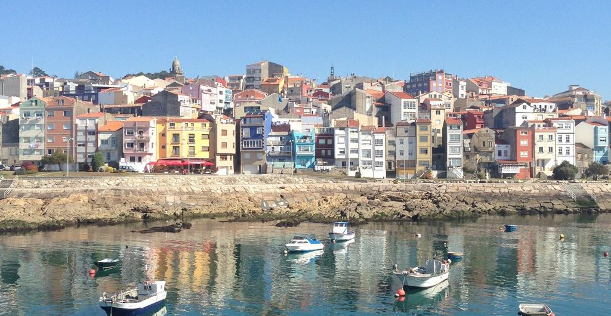
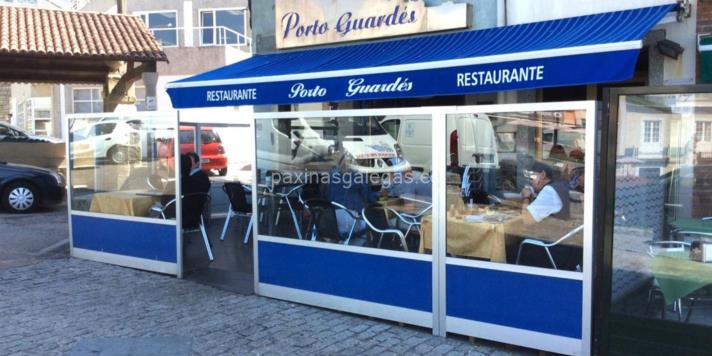

POZAS DE MOUGÁS
 Categoría: Patrimonio natural. Localización: 42.0605833, -8.8621. En la geografía de Oia existen multitud de valles regados por pequeños rios y arroyos. El rio Peito, en la falda oeste de la Sierra da Groba, posee multitud de pequeñas cascadas y pozas. Entre las más conocidas del municipio destacan por su tamaño y belleza las llamadas Pozas de Mougas. Son un destino habitual en la época estival y componen un área recreativa fluvial con un gran atractivo. Categoría: Patrimonio natural. Localización: 42.0605833, -8.8621. En la geografía de Oia existen multitud de valles regados por pequeños rios y arroyos. El rio Peito, en la falda oeste de la Sierra da Groba, posee multitud de pequeñas cascadas y pozas. Entre las más conocidas del municipio destacan por su tamaño y belleza las llamadas Pozas de Mougas. Son un destino habitual en la época estival y componen un área recreativa fluvial con un gran atractivo.
|
EL POZO DEL ARCO
Categoría: Patrimonio natural. Localización: 42.00794172, -8.802555238. El Rio Tamuxe da lugar en esta zona a una serie de pozas naturales flanqueadas por molinos de agua recientemente restaurados, un paseo fluvial y un área recreativa. Una zona idónea para el descanso y el esparcimiento en contacto con la naturaleza.
|
POZAS DE LOUREZA
Categoría: Patrimonio natural. Localización: 41.99907158, -8.811735428. Siguiendo el curso del Tamuxe hasta la parroquia de Loureza, el rio genera pequeñas cascadas y pozas naturales que ofrecen al visitante un entorno incomparable para el baño y el descanso. Destaca la zona por su belleza natural y por las posibilidades de recreo que ofrece.
|